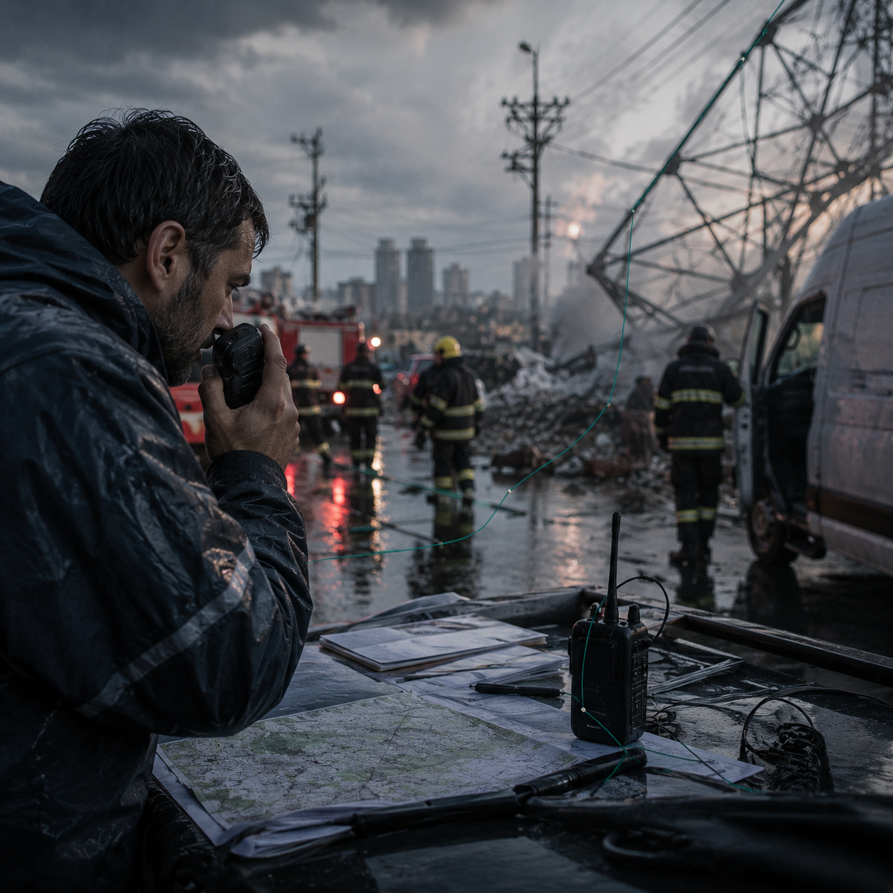

Starts fromAn incident or changing situation

SCN-087 · Respond & Coordinate
Maintain a shared situation with access levels suited to the actors
A communications network fails just as another public emergency begins, giving technicians, responders, and authorities different partial realities. Koali serves one governed incident view at the right access level, keeping decisions tied to the constraints actually known at the time.
ExampleThe Network Fails as Another Public Emergency Begins
FindUnderstandLearnCollaborateChooseActRespondRemember
← Back to the full MosaicWhat breaks without continuity
Technical recovery and public response collide because actors see different versions of the same degraded network.
System path
KristalOrgo
How it moves
outage → service map → priorities → repairs → temporary capabilities → recovery
Also useful forTelecommunications · Emergency Response · Infrastructure